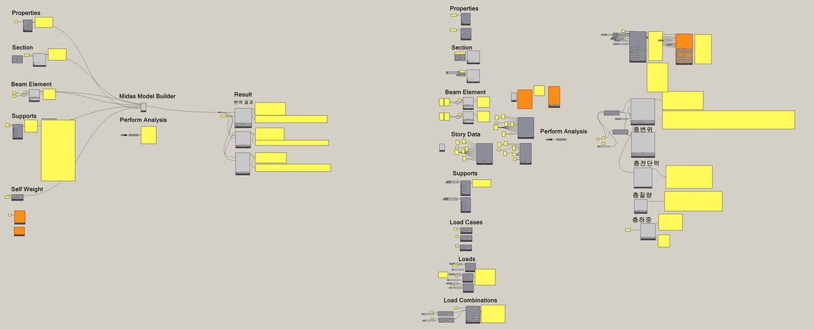
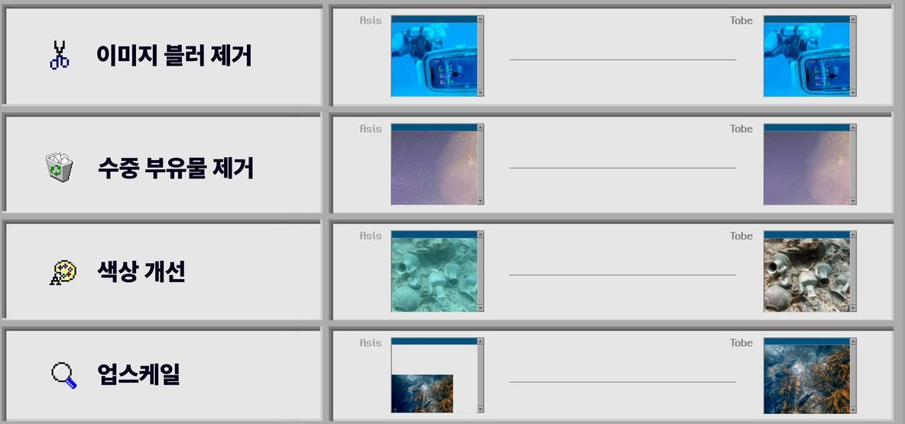

건축 도메인
한양대학교 건축공학과를 졸업하고 부동산 개발·시행(사업성 검토·인허가·PF)을 했습니다. 지금은 건축설계사무소에서 일합니다.
경력 보기이력서 · 포트폴리오
건축을 아는 개발자.
BIM 자동화와 AI 에이전트를 함께 만듭니다.
지금은 건축설계사무소에서 사내 AI 도입 실무를 합니다. C#/.NET으로 Tekla·MIDAS·Grasshopper 플러그인을 개발했고, 딥러닝 영상 모델을 경량화해 스마트폰에 배포했습니다.
한양대학교 건축공학과를 졸업하고 부동산 개발·시행(사업성 검토·인허가·PF)을 했습니다. 지금은 건축설계사무소에서 일합니다.
경력 보기Tekla·MIDAS·Grasshopper API로 C#/.NET 플러그인을 약 1년 5개월 개발했습니다. 교량 거더 설계 파라미터 약 170개 입력 UI, Grasshopper–MIDAS 컴포넌트·기능 약 40개.
프로젝트 보기자연어 룰로 BIM 모델을 검증하는 에이전트를 만들어 공개했습니다. 기본 파이프라인에서는 LLM이 규칙 해석만 맡고 판정·수정은 코드가 합니다. 지금은 사내 MCP 서비스를 검증하고 배포합니다.
BIMHarness 보기레이어별 추론 시간을 기기에서 프로파일링해 영상 모델을 경량화하고, Int8 모델 추론 시간을 20.71초에서 2.38초로 줄였습니다(FHD, 8.7배). 갤럭시·아이폰 배포, 제1저자 논문과 특허 출원.
KETI 프로젝트 보기2026.08 – 현재
AX부문 · AI 기술개발
건축설계사무소의 사내 AI 도입 실무를 합니다. MCP 서비스를 사내 서버에 올리고 온프레미스 LLM 환경을 준비하며, 외부 AI 도구를 검증하고 임직원의 AI 활용을 지원합니다. 구현은 AI 코딩 에이전트(Claude Code·Codex)로 하고, 범위 결정·시험·배포·보안 판단은 직접 합니다.
2025.02 – 2026.07
BIM 플러그인 개발 · C#/.NET
건설 BIM 소프트웨어(Tekla Structures · MIDAS Gen/Civil · Grasshopper)와 연동하는 플러그인과 자동화 도구를 C#/.NET으로 개발했습니다.
2023.05 – 2024.08
2021.02 – 2022.04
사업개발 · 부동산 개발·시행
신규 개발사업 발굴과 사업부지 매입, 인허가와 사후 관리, 사업기획·사업성 검토, PF 금융 업무를 맡았습니다.
자연어로 쓴 룰로 IFC 모델을 검증하고 고치고 한국어 보고서까지 만드는 BIM 멀티 에이전트
.ifcrules.md → rules_compiled.json violations.json*_fixed.ifc · changes.log.jsonreport.md기본 파이프라인에서 LLM은 2단계(룰 해석)에만 쓰고, 판정·수정·보고는 결정론적 Python 코드가 합니다. 1단계(IFC)와 2단계(규칙)의 결과를 3단계가 함께 받습니다.
pset_set_value set_attribute material_change geometry_change만 자동으로 고치고, 요소 추가·삭제 같은 수정은 보고서의 '수동 검토 필요'로 넘깁니다. 수정 전 원본을 백업하고 원본·수정본 SHA-256 해시와 변경 내역을 changes.log.json에 남깁니다.--skip-compile) API 호출을 줄입니다.MCP 도구: list_rules · compile_rules · check_ollama · validate_ifc · apply_fixes · generate_report · run_full_pipeline · ai_agent_mode · ai_react_agent
Grasshopper에서 MIDAS Gen/Civil 모델을 만들고, 고치고, 해석하는 플러그인

기둥·보·거더·브라켓·슬래브를 설계하고 3D로 확인하며 철근 배근과 물량(BOM)을 산출하는 데스크톱 앱
Grasshopper에서 Tekla Structures 모델과 도면을 직접 다루는 상용 BIM 플러그인
GH_Goo<T>를 확장해 Tekla 도면 객체용 커스텀 데이터 타입 2종 설계IPC 거더 교량의 설계 모델을 만드는 Tekla Structures 플러그인
지진 성능 예측 과제(2025~2029)에서 MIDAS Gen 모델을 자동으로 만들고 해석 결과를 모으는 도구
수중 촬영 영상의 흐림·부유물·색 문제를 줄이고 스마트폰에서 동작하도록 만든 경량 네트워크

스마트폰 카메라로 수중 생물을 인식하는 모바일 시스템
2023.02 – 2023.04 · 외주
AWS 서버와 REST API를 만들고, YOLOv5와 OpenCV(blob detection)로 정자 개수·이동거리·운동성을 분석했습니다. 앱 출시.
대학
Unity로 건축물 3D 모델을 만들고 Vuforia로 설계 도면을 인식해, 설계한 건물을 실제 크기 AR로 확인하게 했습니다.
온디바이스 AI 기반 수중 생물 인식 기술
2024 한국방송·미디어공학회 하계학술대회 · 2024.06
대조 학습 기반 심층 감독 기법을 이용한 단일 영상 초해상도 모델 경량화 기법
2023 한국방송·미디어공학회 하계학술대회 · 2023.06
수중 영상 색상 보정 관련 특허
출원번호 10-2023-0189364 · 2023
2014.03 – 2021.02
졸업
2022.08 – 2022.12
수료 · 전산학 기초, Pintos OS 프로젝트, 알고리즘·자료구조